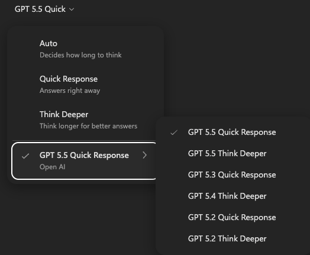
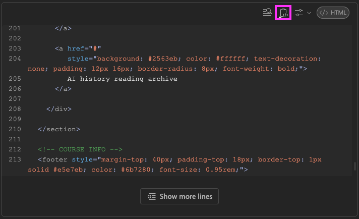
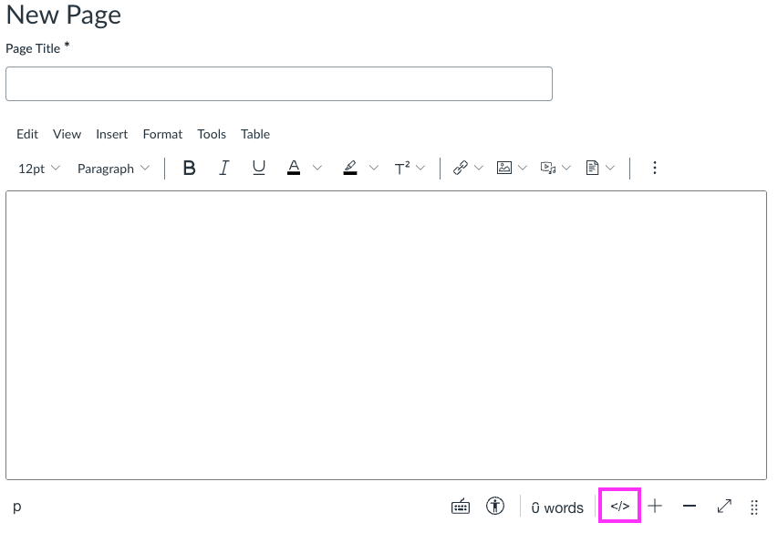
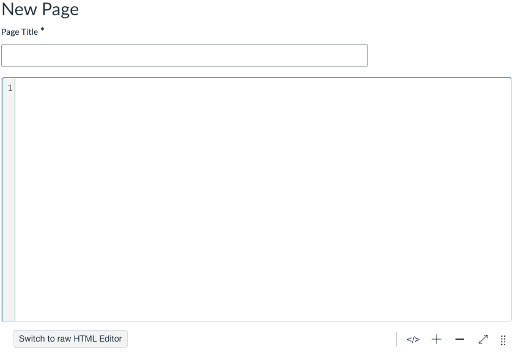
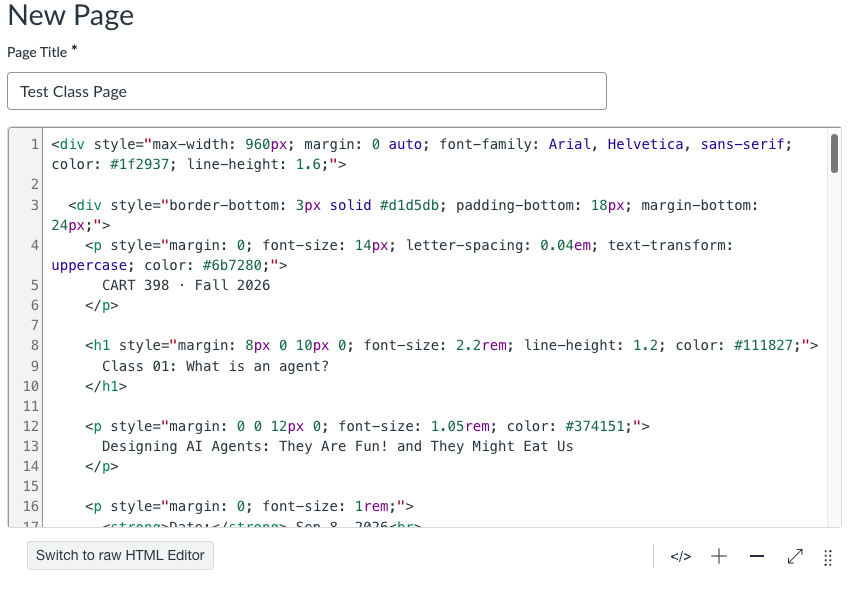
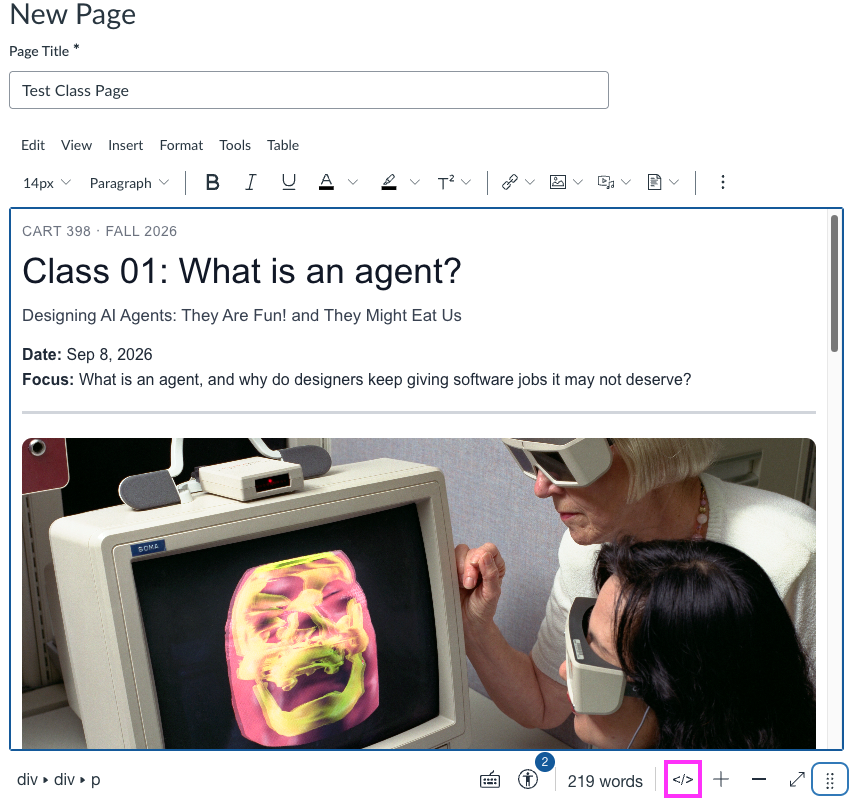

02 Basic Workflow
This workflow uses web-based chat to turn workshop prompt files into Canvas-ready HTML, then paste that HTML into a Canvas page.
Important Links
Workshop Canvas Page
You should have received an invitation to join this page today. Check your OCAD email.
Create course pages there to test out the code you generate.
Copilot Chat
There are many different Copilots in the Microsoft suite, but we will focus on Copilot Chat to generate our Canvas HTML. If you prefer another chat tool, such as Claude or ChatGPT, you can use that too.
- Sign into your OCAD account
- Go to Microsoft 365 Copilot Chat
If it says you need a subscription, sign into your OCAD account from the bottom left corner of the page.
Markdown
Markdown is an open data format created in 2004 as a simple text format that establishes hierarchy and simple styling through basic symbols.
It has become an important tool when working with agent-based AI because it lets you provide more complex instruction sets to an agent working on a task.
We will use Markdown to create the instructions for building Canvas pages.
Example Files
In case you missed it in the install step, these are all the files you will need.
Basic Workflow with Web-Based Chat
Set Copilot to use the correct model
By default, Copilot will often leave the model choice set to Auto. This can make the output type less predictable.
- In the top left corner, press the plus sign
- Select the newest GPT model that has Quick Response
In this workflow, having the model overthink tends to lead to worse results and can make it render the webpage instead of generating the raw code.

Upload the Canvas skill as context
A skill is a platform-agnostic set of tools and instructions used by AI agents to tailor the work toward specific outcomes. Like most things with AI agents, it is just a text file with particular formatting.
You can find SKILL.md in the example files for today.
Use the Markdown text as the chat prompt
This is a workaround for today's session. Typically, we would have the agents operate on our file directly in VS Code, but this method will be fine for today.
These Markdown files are designed to work either way and have the prompt information included at the top.
- Copy the text of the Markdown file you want to use to generate the Canvas page
- Paste the entire text as a prompt into the chat
- Press enter to generate the code
Copy the generated HTML
Option 1: Copy from a code block
Hopefully, the chat tool will generate a code block that looks like this.

- Click the clipboard icon to copy the code
- Create a new blank file in VS Code with File -> New Text File
- Give it a name you can remember
- Paste it into the blank file
It is important to keep local copies of your files for organization.
Option 2: Download canvas-fragment.html
Some chat tools may generate a download link instead of a copyable code block.
- Download the
canvas-fragment.htmlfile - Copy it into the folder with the other example files
- Select the file in VS Code to view the raw HTML code
- Copy the raw HTML from that file
Use the generated code in Canvas
Now you can use the generated HTML to create a page in Canvas.
- Go to the workshop Canvas pages area
- Create a new page by pressing + Page
- Toggle to the HTML editor by pressing the
</>icon

When you toggle to the HTML editor, there will be numbered lines and a gray bar on the left.

Copy your generated HTML and paste it into the box.

Toggle back to the rendered view by pressing the </> icon again.

- You should now see the styled page
- Save or publish it
- You can also go back and edit the page directly as you typically would in the Canvas editor
Problems
How do I know if it worked correctly?
In the example fileset, each section has a folder called theAnswers with pre-generated HTML. You can also view these pages from that section on this website.
It gave me the rendered HTML, not the code
Tell the chat tool to fix it. Ask it to provide the output as downloadable HTML.
Something else is wrong with the code or output
Try to explain what is wrong in the chat and ask it to fix the issue. Be specific about what you expected to see and what happened instead.